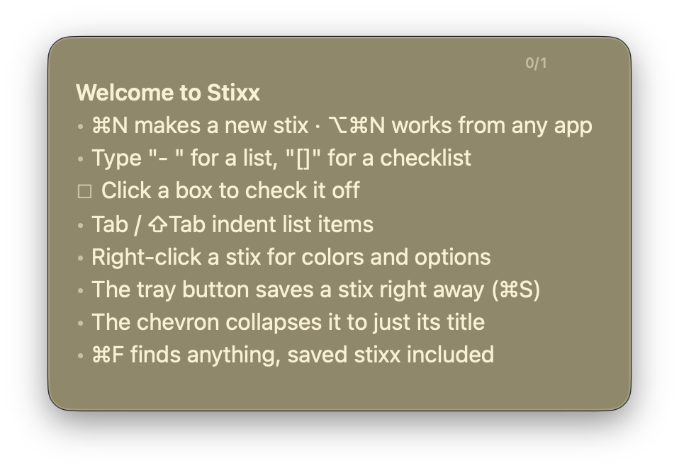
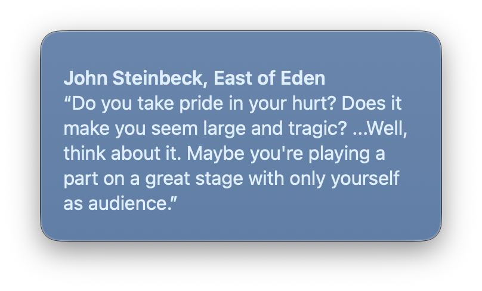
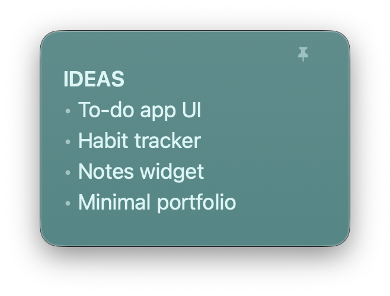
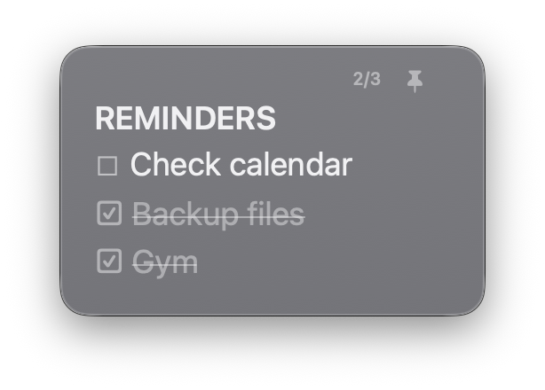

Clean by design
No visible chrome — the controls appear only when you hover a note’s top edge.
Minimal, native sticky notes for macOS.
Each note is a stix; together they’re your stixx.
Free & open source · macOS 13+ · Apple silicon & Intel · under 1 MB





No visible chrome — the controls appear only when you hover a note’s top edge.
A translucent stix blurs whatever is behind it; a slider in Settings tunes the tint.
Type [] for a checkbox or - for a bullet. Click to check off, Tab to nest.
Every stix returns to its exact spot on the next launch. Nothing to save, ever.
⌥⌘N creates a stix from inside any app, system-wide.
⌘F searches every stix — including the ones you’ve put away for later.
⌃⌘T slides every open stix into a neat grid, keeping sizes and order.
Pure AppKit, zero dependencies, sandboxed. Your notes never leave your Mac.